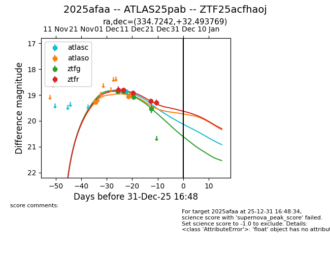
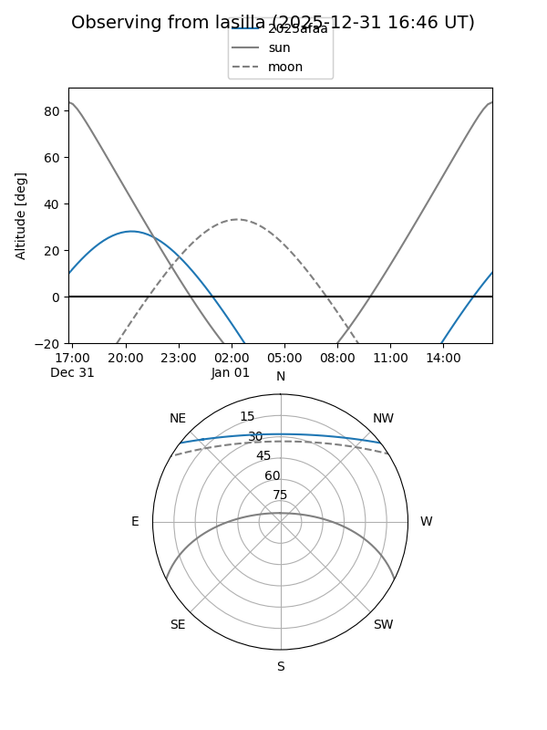
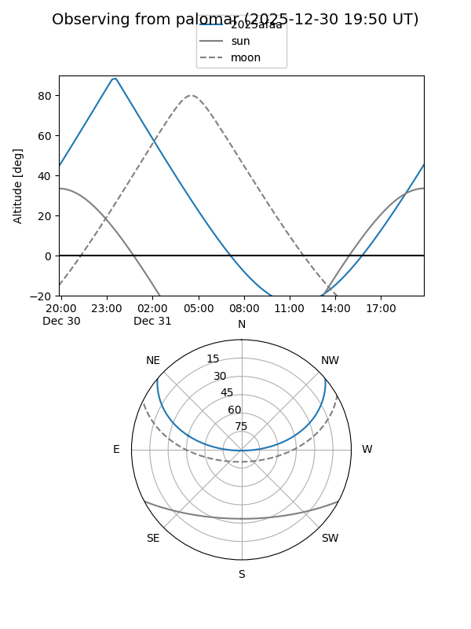
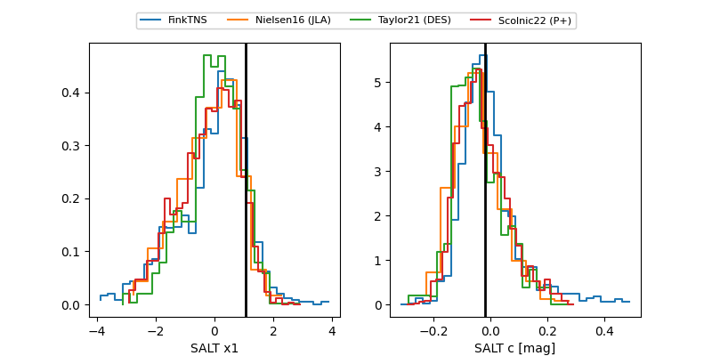

2025afaa
Target 2025afaa at 2025-12-19 05:34
Aliases and brokers:
FINK: fink-portal.org/ZTF25acfhaoj
Lasair: lasair-ztf.lsst.ac.uk/objects/ZTF25acfhaoj
ALeRCE: alerce.online/object/ZTF25acfhaoj
TNS: wis-tns.org/object/2025afaa
YSE: ziggy.ucolick.org/yse/transient_detail/2025afaa
alt names
ZTF25acfhaoj (ztf,fink_ztf)
2025afaa (tns,yse)
ATLAS25pab (atlas)
Coordinates:
equatorial (ra, dec) = 334.7242,+32.49377
equatorial (HMS+DMS) = 22:18:53.80,+32:29:37.57
galactic (l, b) = (89.2197,-20.21094)
Flags:
Photometry:
last atlasc=18.87, atlaso=18.97, ztfg=19.53, ztfr=19.24
1 atlasc, 3 atlaso, 4 ztfg, 4 ztfr detections
Lightcurve

Visibility


Additional plots
